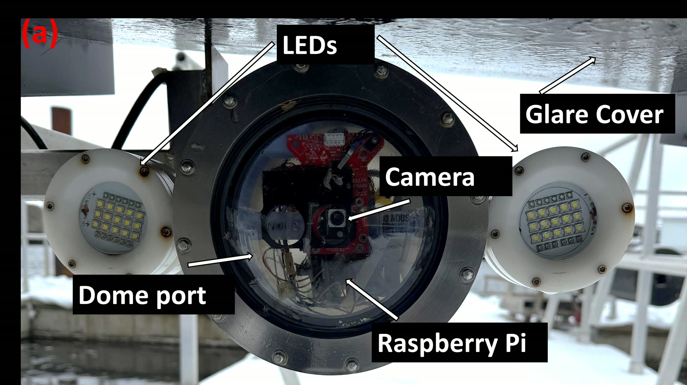
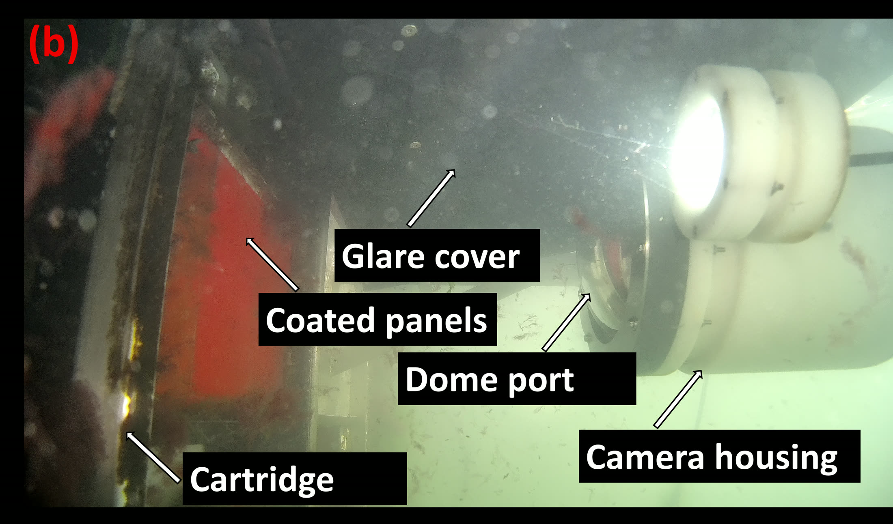

01
Stage one
Cameras underwater
The pipeline starts with seeing clearly underwater. I selected and integrated the cameras, optics, and lighting, calibrated them against a submerged target, and built the housings that hold each panel in a fixed position. Three systems have run continuously for more than two years, and have become the standard imaging equipment the test centre relies on.

